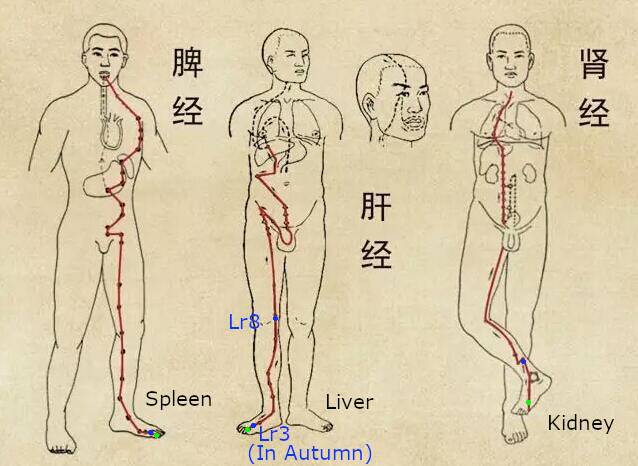

Large Intestine
You should not be at all surprised to
discover that pain that is felt in the
forefinger, the wrist, the elbow (tennis
elbow), the shoulder, the throat, the teeth
or a blocked nose - is connected with a
problem in the large intestine and that such
pain can be treated by stimulating certain
points along the large intestine PM. Jing point Li1(green), Booster point Li11(blue), Meeting point Gb13(purple) - see Gall-Bladder meridian.
San Jiao(Triple Heater)
Jing point Te1(green), Booster point Te4(blue), Meeting point Gb13(purple) - see Gall-Bladder meridian.
Small Intestine
The little finger, the ulna side of the hand and the wrist, the arm, the shoulder, the neck, the cheek and the ear.
Jing point Si1(green), Booster point Si4(blue) - replace Si4 with Si3 in summer! Meeting point Gb13(purple) - see Gall-Bladder meridian.
Lung PM Pain in the thumb, on the thumb side of the
wrist, in the forearm, in the centre of the front
of the elbow, level with the biceps or on the
front of the shoulder. Jing point Lu11(green), Booster point Lu9(blue), Meeting point Gb22(purple) - see Gall-Bladder meridian.
Pericardium PM Pain or numbness in the middle
finger, the palm of the hand, the
front of the wrist, the front of the
forearm and the upper arm, the
front of the base of the shoulder
the thorax, next to the breast.
Jing point Pc9(green), Booster point Pc7(blue)-except in summer, Meeting point Gb22(purple) - see Gall-Bladder meridian.
Heart PM Pain or swelling in the armpit, along the inner side of the front of the arm, the
elbow, the inner side of the front of the forearm, the cubital edge of the wrist, the
palm of the hand (hypothenar eminence) or the little finger.
Jing point Ht9(green), Booster point Ht7(blue)-except in summer, Meeting point Gb22(purple) - see Gall-Bladder meridian.
Stomach PM It is not at all surprising to discover that facial
neuralgia can be connected with the Stomach
PM, as can certain cases of toothache, sore
throats, painful breasts, stomach-ache, soreness
in the outer thighs or the knees, along the outside
of the tibia, the foot or the second or third toes.
Indeed, these two toes are often deformed in
subjects suffering from stomach troubles.
Jing point St45(green), Booster point St41(blue), Meeting point St2(purple).
Gall-Bladder PM Sensitivity disorders, malformation or pain in the
fourth toe, the foot, the ankle (swelling like an egg in
front of and below the lateral malleolus), the outside
of the leg along the fibula where one can feel a
burning sensation (too much yang) or numbness
(too much yin), the outside of the thigh along the
femur, the hip (arthritis etc), pain on the side of the
ribs, the shoulder (like a strap), along the side of the
neck, migraine in the temple, at the outer edge of the
eye, in the occipital region (at the back of the head)
Jing point Gb44(green), Booster point Gb40(blue), Meeting point St2(purple).
Bladder PM A prickling sensation or pain at the inner corner of the eye, headaches,
backache, cervical arthrosis, back pain, lumbago, sciatica, cramp in the calves,
along the outer edge ofthe foot, the Achilles' tendon, the heel and the small toe.
Jing point Bl67(green), Booster point Bl64(blue), Meeting point St2(purple).

Spleen PM Painful big toes, bunions, pain along the
inner side of the leg, the rear edge of the tibia,
the inside of the knee, the inner side of the thigh,
the crotch, the abdomen and the thorax.
Jing point Sp1(green), Booster point Sp2(blue), Meeting point CV3(purple) - see next card.
Liver PM Ingrown toenail on the big toe, painful big toe, pain on
the upper side of the foot, the inside of the leg, the knee, the
thigh and the side of the front of the trunk as far as just
below the breast.
Jing point Lr1(green), Booster point Lr8(blue) - replace Lr8 with Lr3 in autumn! Meeting point CV3(purple) - see next card.
Kidney PM Pain on the sole of the foot, the heel, the inner ankle, the inside of the leg, the
thigh, the groin, the abdomen or the thorax, along the course of the meridian.
Jing point Ki1(green), Booster point Ki7(blue), Meeting point CV3(purple) - see next card.